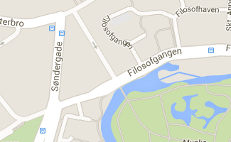
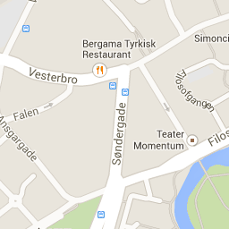
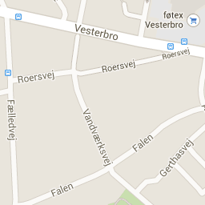
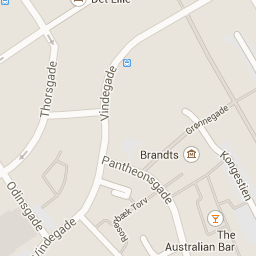
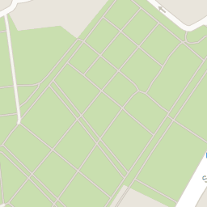

momentum
Home
Progam
Forestillinger
Billetter
Kort
Publikumsafstemning





Kortdata
Kortdata ©2014 Google
Kortdata
Kortdata ©2014 Google
Kortdata ©2014 Google
Servicevilkår
Rapporter en fejl på kortet
Teater Momentum
Ny Vestergade 18, 5000 Odense C
Publikum: 90 pladser
Antal billetter til reservation: 70 stk.